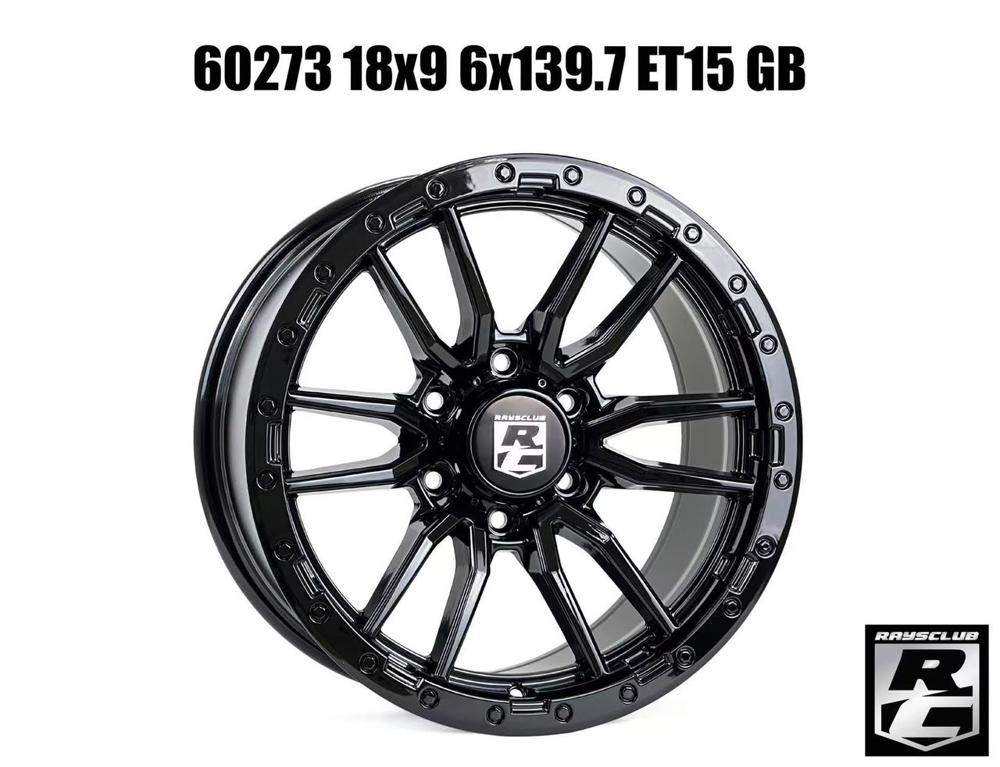

RaysClub 60273 18x9J | PCD 6x139.7 | ET15 | CB106.1mm | Gloss Black

RM 2100.00
RAYSCLUB 60273 | 18x9 | 6x139.7 | ET15 | Gloss Black Upgrade your 4x4 stance with the RAYSCLUB 60273. Featuring an aggressive split 6-spoke design with simulated beadlock lip styling in a deep Gloss Black finish. The 9-inch width paired with an ET15 offset gives your pickup truck or SUV a wider, flush-to-fender aggressive look without needing wheel spacers. • Size: 18 x 9.0J • PCD: 6 x 139.7 • Offset: ET15 • Center Bore: 106.1mm (Hub-centric rings provided for smaller hub vehicles) • Color: Gloss Black • Fits: Toyota Hilux, Ford Ranger, Mitsubishi Triton, Isuzu D-Max, Nissan Navara, Mazda BT-50, Fortuner & MU-X. Price quoted is for 1 set (4 pcs). Trade-in welcome. Professional installation & high-speed balancing available at Klang Hock Li Tyre.
Klang Hock Li Tyre Services Sdn Bhd, Klang, Selangor, Malaysia.
View live product details and enquire